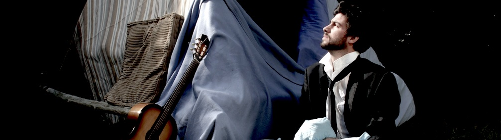

La Cabane de Couverture
J'ai créé et joué ce spectacle en 2013, avant d'être professionel du spectacle. Avec ces évidentes imperfections et défauts, j'en garde un souvenir nostalgique agréable.
L'Adulte n'y croit plus. Il est confronté aux deuils de sa vie d'Adulte, l'amour qu'il n'a pas osé, la rock star qu'il ne sera jamais, les contes auxquels il ne croit plus. Alors désespéré, il se lance à corps perdu dans la construction du seul endroit où il se sent bien : la cabane de couvertures de son enfance.
Pétillant pessimiste et incorrigible rêveur, Samuel Genin conte, en musique, ce retour en enfance impossible qui s'achève sur une ré-écriture grinçante du Petit Chaperon, en "alexandrins noirs", où amusés d'abord, gênés ensuite, on n'a d'autres choix que d'en rire.